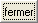

tkinter¶
Les interfaces graphiques servent à rendre les programmes plus conviviaux. Elles sont pratiques à utiliser mais elles demandent un peu de temps pour les concevoir. Un programme sans interface exécute des instructions les unes à la suite des autres, le programme a un début - un point d’entrée - et une fin. Avec une interface, le programme fonctionne de manière différente. Il n’exécute plus successivement les instructions mais attend un événement - pression d’une touche du clavier, clic de souris - pour exécuter une fonction. C’est comme si le programme avait une multitude de points d’entrée.
Il existe plusieurs modules permettant d’exploiter les interfaces graphiques. Le plus simple est le module tkinter présent lors de l’installation du langage Python. Ce module est simple mais limité. Le module wxPython est une alternative plus riche mais il faut vérifier que sa dernière mise à jour est assez récente. La plus connue est PyQt5 (ou PyQt4). Le module tkinter fait partie de la distribution standard de Python et sera disponible dans toutes les verions de Python. Visuellement, tkinter est moins joli que d’autres extensions mais il vaut mieux vérifier la fréquence des mises à jour de leur code source avant d’en choisir une github/wxPython github/PyQt5. La licence de wxPython est plus souple. D’autres alternatives sont disponibles à Other Graphical User Interface Packages.
Le fonctionnement des interfaces graphiques sous un module ou un autre est presque identique. C’est pourquoi ce chapitre n’en présentera qu’un seul, le module tkinter. Pour d’autres modules, les noms de classes changent mais la logique reste la même : il s’agit d’associer des événements à des parties du programme Python.
Les interfaces graphiques évoluent sans doute plus vite que les autres modules, des composantes de plus en plus complexes apparaissent régulièrement. Une excellente source de documentation sont les forums de discussion qui sont un lieu où des programmeurs échangent questions et réponses. Un message d’erreur entré sur un moteur de recherche Internet permet souvent de tomber sur des échanges de ce type, sur des problèmes résolus par d’autres. Le plus connu est stackoverflow/tkinter.
Sous Linux, l’utilisation de ce module requiert une étape supplémentaire si l’erreur suivante se produit : ImportError: No module named “Tkinter”.
sudo apt-get install python3-tk
Introduction¶
Un programme muni d’une interface graphique fonctionne différemment d’un programme classique. Un programme classique est une succession presque linéaire d’instructions. Il y a un début ou point d’entrée du programme et aucun événement extérieur ne vient troubler son déroulement. Avec une interface graphique, le point d’entrée du programme est masqué : il est pris en compte automatiquement. Du point de vue du programmeur, le programme a plusieurs points d’entrée : une simple fenêtre avec deux boutons propose deux façons de commencer et il faut prévoir une action associée à chaque bouton.
La conception d’une interface graphique se déroule généralement selon deux étapes. La première consiste à dessiner l’interface, c’est-à-dire choisir une position pour les objets de la fenêtre (boutons, zone de saisie, liste déroulante, …). La seconde étape définit le fonctionnement de la fenêtre, c’est-à-dire associer à chaque objet des fonctions qui seront exécutées si un tel événement se réalise (pression d’un bouton, pression d’une touche, …).
Pour le moment, nous allons supposer que ces deux étapes sont scindées même si elles sont parfois entremêlées lorsqu’un événement implique la modification de l’apparence de la fenêtre. La section qui suit décrit des objets que propose le module tkinter. La section suivante présente la manière de les disposer dans une fenêtre. La section d’après décrit les événements et le moyen de les relier à des fonctions du programme. Ce chapitre se termine par quelques constructions courantes à propos des interfaces graphiques.
Les objets¶
Les interfaces graphiques sont composées d”objets ou widgets ou contrôles. Comme ils reçoivent des événements, en un sens, ce sont ces objets qui pilotent un programme ou qui le contrôlent.}. Ce paragraphe décrit les principales méthodes qui permettent de modifier le contenu et l’apparence des objets.
Les exemples de codes des paragraphes qui suivent permettent de disposer les objets dans une fenêtre qui ne s’affichera pas sans les quelques lignes de code supplémentaires présentées au paragraphe Fenêtre principale et l’utilisation d’une méthode tkinter.Widget.pack L’exemple suivant crée un objet :
zone_texte = tkinter.Label (text = "zone de texte")
Et pour l’afficher, il faut l’enrober :
import tkinter # import de tkinter
root = tkinter.Tk () # création de la fenêtre principale
# ...
obj = tkinter.Label (text = "zone de texte")
# ...
obj.pack () # on ajoute l'objet à la fenêtre principale
root.mainloop () # on affiche enfin la fenêtre principal et on attend
# les événements (souris, clic, clavier)
Zone de texte¶
Une zone de texte sert à insérer dans une fenêtre graphique une
légende indiquant ce qu’il faut insérer dans une zone de saisie
voisine comme le montre la figure qui suit. Une zone de texte
correspond à la classe Label. Pour créer une zone de texte,
il suffit d’écrire la ligne suivante :
zone_texte = tkinter.Label (text = "zone de texte")
Il est possible que le texte de cette zone de texte doive changer après
quelques temps. Dans ce cas, il faut appeler la méthode config comme suit :
zone_texte = tkinter.Label (text = "premier texte")
# ...
# pour changer de texte
zone_texte.config (text = "second texte")
La zone de texte ou Label est associée à une zone de saisie.
La seconde image montre une zone de texte dans l’état DISABLED.
L’exemple suivant montre deux zones de texte. La seconde est grisée par rapport à la première. Pour obtenir cet état, il suffit d’utiliser l’instruction suivante :
zone_texte.config (state = tkinter.DISABLED)
Et pour revenir à un état normal :
zone_texte.config (state = tkinter.NORMAL)
Ces deux dernières options sont communes à tous les objets d’une interface graphique. Cette option sera rappelée au paragraphe Méthodes communes.
Bouton¶
Un bouton a pour but de faire le lien entre une fonction et un clic de souris. Un bouton correspond à la classe tkinter.Button Pour créer un bouton, il suffit d’écrire la ligne suivante :
bouton = tkinter.Button (text = "zone de texte")
Il est possible que le texte de ce bouton doive changer après quelques temps. Dans ce cas, il faut appeler la méthode tkinter.Button.config comme suit :
bouton = tkinter.Button (text = "premier texte")
# ...
# pour changer de texte
bouton.config (text = "second texte")
Bouton non pressé |
Bouton pressé |
Bouton grisé |
Le troisième bouton est grisé par rapport au premier. Les boutons grisés ne peuvent pas être pressés. Pour obtenir cet état, il suffit d’utiliser l’instruction suivante :
bouton.config (state = tkinter.DISABLED)
Et pour revenir à un état normal :
bouton.config (state = tkinter.NORMAL)
C’est pour cet objet que cette option est la plus intéressante car elle permet d’interdire la possibilité pour l’utilisateur de presser le bouton tout en le laissant visible.
Il est possible également d’associer une image à un bouton. Par exemple,
les trois lignes suivantes créent un bouton, charge une image au format
gif puis l’associe au bouton b. Lors de l’affichage de la fenêtre,
le bouton b ne contient pas de texte mais une image.
b = tkinter.Button()
im = tkinter.PhotoImage(file="chameau.gif")
b.config(image=im)
|
Les images qu’il est possible de charger sont nécessairement au format GIF, le seul que le module tkinter puisse lire.
Zone de saisie¶
Une zone de saisie a pour but de recevoir une information entrée par l’utilisateur. Une zone de saisie correspond à la classe tkinter.Entry ; pour en créer une, il suffit d’écrire la ligne suivante :
saisie = tkinter.Entry ()
Pour modifier le contenu de la zone de saisie, il faut utiliser la méthode tkinter.Entry.insert qui insère un texte à une position donnée.
# le premier paramètre est la position
# où insérer le texte (second paramètre)
saisie.insert (pos, "contenu")
Pour obtenir le contenu de la zone de saisie, il faut utiliser la méthode tkinter.Entry.get :
contenu = saisie.get ()
Pour supprimer le contenu de la zone de saisie, il faut utiliser la méthode tkinter.Entry.delete. Cette méthode supprime le texte entre deux positions.
# supprime le texte entre les positions pos1, pos2
saisie.delete (pos1, pos2)
Par exemple, pour supprimer le contenu d’une zone de saisie, on peut utiliser l’instruction suivante :
saisie.delete (0, len(saisie.get()))
Zone de saisie normale |
Zone de saisie grisée |
La seconde zone de saisie est grisée par rapport à la première. Les zones de saisie grisées ne peuvent pas être modifiées. Pour obtenir cet état, il suffit d’utiliser la méthode tkinter.Entry.config comme pour les précédents objets. Cette option sera rappelée au paragraphe Méthodes communes.
Zone de saisie à plusieurs lignes¶
Une zone de saisie à plusieurs lignes est identique à la précédente à ceci près qu’elle autorise la saisie d’un texte sur plusieurs lignes. Cette zone correspond à la classe tkinter.Text. Pour créer une telle zone, il suffit d’écrire la ligne suivante :
saisie = tkinter.Text ()
Pour modifier le contenu de la zone de saisie, il faut utiliser la méthode tkinter.Text.insert qui insère un texte à une position donnée. La méthode diffère de celle de la classe Entry puisque la position d’insertion est maintenant une chaîne de caractères contenant deux nombres séparés par un point : le premier nombre désigne la ligne, le second la position sur cette ligne.
# le premier paramètre est la position
# où insérer le texte (second paramètre)
pos = "0.0"
saisie.insert (pos, "première ligne\nseconde ligne")
Pour obtenir le contenu de la zone de saisie, il faut utiliser la méthode
tkinter.Text.get
qui retourne le texte entre deux positions. La position de fin n’est pas
connue, on utilise la chaîne de caractères "end" pour désigner la fin de la zone de saisie.
# retourne le texte entre deux positions
pos1 = "0.0"
pos2 = "end" # ou tkinter.END
contenu = saisie.get (pos1, pos2)
Pour supprimer le contenu de la zone de saisie, il faut utiliser la méthode tkinter.Text.delete. Cette méthode supprime le texte entre deux positions.
# supprime le texte entre les positions pos1, pos2
saisie.delete (pos1, pos2)
Par exemple, pour supprimer le contenu d’une zone de saisie à plusieurs lignes, on peut utiliser l’instruction suivante :
saisie.delete ("0.0", "end")
# on peut aussi utiliser
# saisie.delete ("0.0", tkinter.END)
Pour modifier les dimensions de la zone de saisie à plusieurs lignes, on utilise l’instruction suivante :
# modifie les dimensions de la zone
# width <--> largeur
# height <--> hauteur en lignes
saisie.config (width = 10, height = 5)
|
L’image précédente montre une zone de saisie à plusieurs lignes. Pour griser cette zone, il suffit d’utiliser la méthode tkinter.Text.config rappelée au paragraphe Méthodes communes.
Case à cocher¶
Une case à cocher correspond à la classe tkinter.CheckButton. Pour créer une case à cocher, il suffit d’écrire la ligne suivante :
# crée un objet entier pour récupérer la valeur de la case à cocher,
# 0 pour non cochée, 1 pour cochée
v = tkinter.IntVar ()
case = tkinter.Checkbutton (variable = v)
En fait, ce sont deux objets qui sont créés. Le premier, de type tkinter.IntVar, mémorise la valeur de la case à cocher. Le second objet, de type tkinter.CheckButton, gère l’apparence au niveau de l’interface graphique. La raison de ces deux objets est plus évidente dans le cas de l’objet RadioButton décrit au paragraphe suivant. Pour savoir si la case est cochée ou non, il suffit d’exécuter l’instruction :
v.get () # égal à 1 si la case est cochée, 0 sinon
Pour cocher et décocher la case, il faut utiliser les instructions suivantes :
case.select () # pour cocher
case.deselect () # pour décocher
Il est possible d’associer du texte à l’objet case à cocher :
case.config (text = "case à cocher")
Cases à cocher cochée, non cochée, grisée |
Case à cocher avec une légende |
La troisième est grisée par rapport à la première. Les cases grisées ne peuvent pas être cochées. Pour obtenir cet état, il suffit d’utiliser la méthode tkinter.CheckButton.config rappelée au paragraphe Méthodes communes.
Case ronde ou bouton radio¶
Une case ronde ou bouton radio correspond à la classe tkinter.RadioButton. Elles fonctionnent de manière semblable à des cases à cocher excepté le fait qu’elles n’apparaissent jamais seules : elles fonctionnent en groupe. Pour créer un groupe de trois cases rondes, il suffit d’écrire la ligne suivante :
# crée un objet entier partagé pour récupérer le numéro du bouton radio activé
v = tkinter.IntVar ()
case1 = tkinter.Radiobutton (variable = v, value = 10)
case2 = tkinter.Radiobutton (variable = v, value = 20)
case3 = tkinter.Radiobutton (variable = v, value = 30)
La variable v est partagée par les trois cases rondes.
L’option value du constructeur permet d’associer un bouton radio à
une valeur de v. Si v == 10, seul le premier bouton radio sera
sélectionné. Si v == 20, seul le second bouton radio le sera. Si
deux valeurs sont identiques pour deux boutons radio, ils seront cochés
et décochés en même temps. Et pour savoir quel bouton radio est coché ou
non, il suffit d’exécuter l’instruction :
v.get () # retourne le numéro du bouton radio coché (ici, 10, 20 ou 30)
Pour cocher un des boutons radio, il faut utiliser l’instruction suivante :
v.set (numero) # numéro du bouton radio à cocher
# pour cet exemple, 10, 20 ou 30
Il est possible d’associer du texte à un bouton radio.
case1.config (text = "premier bouton")
case2.config (text = "second bouton")
case3.config (text = "troisième bouton")
Visuellement, cela donne :
Lorsqu’un bouton radio est grisé, son état ne peut être modifié. La seconde image présente un groupe de bouton radio. Un seul peut être sélectionné à la fois à moins que deux boutons ne soient associés à la même valeur. Dans ce cas, ils agiront de pair.
Liste¶
Un objet liste contient une liste d’intitulés qu’il est possible de sélectionner. Une liste correspond à la classe tkinter.ListBox. Pour la créer, il suffit d’écrire la ligne suivante :
li = tkinter.Listbox ()
Pour modifier les dimensions de la zone de saisie à plusieurs lignes, on utilise l’instruction suivante :
# modifie les dimensions de la liste
# width <--> largeur
# height <--> hauteur en lignes
li.config (width = 10, height = 5)
On peut insérer un élément dans la liste avec la méthode tkinter.ListBox.insert :
pos = 0 # un entier, "end" ou tkinter.END pour insérer ce mot à la fin
li.insert (pos, "première ligne")
On peut supprimer des intitulés de cette liste avec la méthode tkinter.ListBox.delete.
pos1 = 0 # un entier
pos2 = None # un entier, "end" ou tkinter.END pour supprimer tous les éléments
# de pos1 jusqu'au dernier
li.delete (pos1, pos2 = None)
Les intitulés de cette liste peuvent ou non être sélectionnés. Cliquer sur un intitulé le sélectionne mais la méthode tkinter.ListBox.select_set permet aussi de le faire.
pos1 = 0
li.select_set (pos1, pos2 = None)
# sélectionne tous les éléments entre les indices pos1 et
# pos2 inclus ou seulement celui d'indice pos1 si pos2 == None
Réciproquement, il est possible d’enlever un intitulé de la sélection à l’aide de la méthode tkinter.ListBox.select_clear.
pos1 = 0
li.select_clear (pos1, pos2 = None)
# retire la sélection de tous les éléments entre les indices
# pos1 et pos2 inclus ou seulement celui d'indice pos1 si pos2 == None
La méthode tkinter.ListBox.curselection permet d’obtenir la liste des indices des éléments sélectionnés.
sel = li.curselection ()
La méthode tkinter.ListBox.get permet récupérer un élément de la liste tandis que la méthode codes{size} retourne le nombre d’éléments :indextkk{size}indextkk{get}
for i in range (0, li.size()):
print(li.get (i))
Exemple de liste. La seconde liste est grisée et ne peut être modifiée.
Pour obtenir l’état grisé, il faut appeler la méthode tkinter.ListBox.config et rappelée au paragraphe Méthodes communes. Il est possible d’adjoindre une barre de défilement verticale. Il faut pour cela inclure l’objet dans une sous-fenêtre tkinter.Frame qui est définie au paragraphe Sous-fenêtre comme dans l’exemple suivant :
frame = tkinter.Frame (parent)
scrollbar = tkinter.Scrollbar (frame)
li = tkinter.Listbox (frame, width = 88, height = 6,
yscrollcommand = scrollbar.set)
scrollbar.config (command = li.yview)
li.pack (side = tkinter.LEFT)
scrollbar.pack (side = tkinter.RIGHT, fill = tkinter.Y)
Il suffit de transposer cet exemple pour ajouter une barre de défilement horizontale.
Toutefois, il est préférable d’utiliser un objet prédéfini présent dans le module
tkinter.filedialog qui est une extension du module tkinter.
Elle est présentée au paragraphe Liste avec barre de défilement, Combobox.
Lorsqu’on insère plusieurs objets tkinter.ListBox
dans une seule fenêtre, ces objets partagent par défaut la même sélection.
Autrement dit, lorsqu’on clique sur un élément de la seconde
tkinter.ListBox,
l’élément sélectionné dans la première ne l’est plus. Afin de pouvoir
sélectionner un élément dans chaque
tkinter.ListBox, il faut ajouter
dans les paramètres du constructeur l’option exportselection=0
comme l’illustre l’exemple suivant :
li = tkinter.Listbox (frame, width = 88, height = 6, exportselection=0)
Il existe des méthodes plus avancées qui permettent de modifier l’aspect graphique d’un élément comme la méthode tkinter.ListBox.itemconfig. Son utilisation est peu fréquente à moins de vouloir réaliser une belle interface graphique. Le paragraphe Contrôles personnalisés : utilisation des classes montre l’utilisation qu’on peut en faire.
Liste avec barre de défilement, Combobox¶
C’est une liste avec une barre de défilement incluse qui est présente dans l’extension
tkinter.ttk qui étend la liste des objets proposés par
tkinter. C’est ce que fait l’objet tkinter.ttk.Combobox.
import tkinter
import tkinter.ttk as ttk
root = tkinter.Tk()
o = ttk.Combobox(root, values=["ligne 1", "ligne 2", "ligne 3", "ligne 4"])
o.pack ()
def print_file () : # voir le chapitre sur les événements
print(o.get())
b = tkinter.Button (root, text="print")
b.config (command = print_file) # idem
b.pack ()
root.mainloop() # idem
Les extensions tkinter.ttk et tkinter.filedialog
ne sont pas très bien documentées mais il existe de nombreuses
réponses sur les forums de discussions.
Canevas¶
Pour dessiner, il faut utiliser un objet canevas, correspondant à la classe tkinter.Canvas. Pour la créer, il suffit d’écrire la ligne suivante :
ca = tkinter.Canvas ()
Pour modifier les dimensions de la zone de saisie à plusieurs lignes, on utilise l’instruction suivante :
# modifie les dimensions du canevas
# width <--> largeur en pixels
# height <--> hauteur en pixels
ca.config (width = 10, height = 5)
Cet objet permet de dessiner des lignes, des courbes, d’écrire du texte grâce aux méthodes tkinter.Canvas.create_line, tkinter.Canvas.create_rectangle, tkinter.Canvas.create_text.
# dessine deux lignes du point 10,10 au point 40,100 et au point 200,60
# de couleur bleue, d'épaisseur 2
ca.create_line (10,10,40,100, 200,60, fill = "blue", width = 2)
# dessine une courbe du point 10,10 au point 200,60
# de couleur rouge, d'épaisseur 2, c'est une courbe de Bézier
# pour laquelle le point 40,100 sert d'assise
ca.create_line (10,10, 40,100, 200,60, smooth=1, fill = "red", width = 2)
# dessine un rectangle plein de couleur jaune, de bord noir et d'épaisseur 2
ca.create_rectangle (300,100,60,120, fill = "gray", width = 2)
# écrit du texte de couleur noire au point 80,80 et avec la police arial
ca.create_text (80,80, text = "écrire", fill = "black", font = "arial")
Visuellement, cela donne :
Méthodes communes¶
Nous avons vu que tous les objets présentés dans ce
paragraphe possèdent une méthode config
qui permet de définir l’état du widget (grisé ou normal)
voire de la faire disparaître
(voir paragraphe Disposition des objets dans une fenêtre).
widget.config (state = tkinter.DISABLED) # grisé
widget.config (state = tkinter.NORMAL) # aspect normal
Elle permet également de modifier le texte d’un objet, sa position, …
De nombreuses options sont communes à tous les objets et certaines
sont spécifiques. L’aide associée à cette méthode
n’est pas très explicite (par exemple help(tkinter.Label.config)).
En fait, le constructeur et cette méthode ont les mêmes paramètres optionnels.
Il est équivalent de préciser ces options lors de l’appel au constructeur :
l = tkinter.Label (text = "légende")
Ou de les modifier à l’aide de la méthode config :
l = tkinter.Label ()
l.config (text = "légende")
L’aide associée à la méthode codes{config} n’a pas évolué depuis la version 2.5 de Python :
Help on method configure in module tkinter:
configure(self, cnf=None, **kw) unbound tkinter.Label method
Configure resources of a widget.
The values for resources are specified as keyword
arguments. To get an overview about
the allowed keyword arguments call the method keys.
Tandis que l’aide associée au constructeur d’un object :
<<<
import tkinter
help(tkinter.Button.__init__)
>>>
[runpythonerror]
Traceback (most recent call last):
File "<stdin>", line 5, in <module>
ModuleNotFoundError: No module named 'tkinter'
Cette aide mentionne les options communes à tous les objets (ou widgets)
et les options spécifiques à cet objet. Toutes ont une valeur par
défaut qu’il est possible de changer soit dans le constructeur,
soit par la méthode config. Quelques-unes ont été décrites,
d’autres permettent de modifier entre autres la police avec
laquelle est affiché le texte de l’objet (option font),
la couleur du fond (option background), l’alignement du texte,
à gauche, à droite, centré (option justify), l’épaisseur du
bord (option borderwidth), le fait qu’un objet reçoive le
focus (voir paragraphe Focus)
après la pression de la touche tabulation (option takefocus).
Disposition des objets dans une fenêtre¶
Emplacements¶
Chacun des objets (ou widgets) présentés au paragraphe précédent possède trois méthodes qui permettent de déterminer sa position dans une fenêtre : tkinter.Widget.pack, tkinter.Widget.grid, tkinter.Widget.place. Les deux premières permettent de disposer les objets sans se soucier ni de leur dimension ni de leur position. La fenêtre gère cela automatiquement. La dernière place les objets dans une fenêtre à l’aide de coordonnées sans utiliser l’aide d’aucune grille. Dans une fenêtre, tous les objets doivent être placés avec la même méthode. Dans le cas contraire, les résultats risquent ne pas être ceux attendus.
Méthode pack¶
Cette méthode empile les objets les uns à la suite des autres. Par défaut, elle les empile les uns en dessous des autres. Par exemple, l’exemple suivant produit l’empilement des objets.
l = tkinter.Label (text = "première ligne")
l.pack ()
s = tkinter.Entry ()
s.pack ()
e = tkinter.Label (text = "seconde ligne")
e.pack ()
Les objets sont empilés à l’aide de la méthode pack
les uns en dessous des autres pour la première image, les uns à droite des
autres pour la seconde image.
On peut aussi les empiler les uns à droite des autres grâce à l’option side.
l = tkinter.Label (text = "première ligne")
l.pack (side = tkinter.RIGHT)
s = tkinter.Entry ()
s.pack (side = tkinter.RIGHT)
e = tkinter.Label (text = "seconde ligne")
e.pack (side = tkinter.RIGHT)
La méthode pack possède trois options :
sideà choisir entretkinter.TOP(valeur par défaut),tkinter.LEFT,tkinter.BOTTOM,tkinter.RIGHT
expand: égale àTrueouFalse(valeur par défaut), si cette option est vraie, l’objet occupe tout l’espace.fill: égale àNone(valeur par défaut),X,Y,BOTH, l’objet s’étend selon un axe (X ou Y ou les deux).
Il n’est pas toujours évident d’obtenir du premier coup le positionnement des objets souhaités au départ et il faut tâtonner pour y arriver. Lorsque un objet n’est plus nécessaire, il est possible de le faire disparaître en appelant la méthode tkinter.Widget.pack_forget. Le rappel de la méthode tkinter.Widget.pack le fera réapparaître mais rarement au même endroit.
s.pack_forget() # disparition
s.pack() # insertion à un autre endroit
Méthode grid¶
La méthode tkinter.Widget.grid suppose que la fenêtre qui les contient est organisée selon une grille dont chaque case peut recevoir un objet. L’exemple suivant place trois objets dans les cases de coordonnées (0,0), (1,0) et (0,1).
l = tkinter.Label (text = "première ligne")
l.grid (column = 0, row = 0)
s = tkinter.Entry ()
s.grid (column = 0, row = 1)
e = tkinter.Label (text = "seconde ligne")
e.grid (column = 1, row = 0)
Les objets sont placés dans une grille à l’aide de la méthode grid.
Une fois que chaque objet a reçu une position, à l’affichage, il ne sera pas tenu
compte des lignes et colonnes vides.
La méthode tkinter.Widget.grid possède plusieurs options, en voici cinq :
column: colonne dans laquelle sera placée l’objet.columnspan: nombre de colonnes que doit occuper l’objet.row: ligne dans laquelle sera placée l’objet.rowspan: nombre de lignes que doit occuper l’objet.sticky: indique ce qu’il faut faire lorsque la case est plus grande que l’objet qu’elle doit contenir. Par défaut, l’objet est centré mais il est possible d’aligner l’objet sur un ou plusieurs bords en précisant questicky="N"ou"S"ou"W"ou"E". Pour aligner l’objet sur un angle, il suffit de concaténer les deux lettres correspondant aux deux bords concernés. Il est aussi possible d’étendre l’objet d’un bord à l’autre en écrivantsticky="N+S"ousticky="E+W".
Enfin, comme pour la méthode tkinter.Widget.pack, il existe une méthode tkinter.Widget.grid_forget qui permet de faire disparaître les objets.
s.grid_forget() # disparition
Méthode place¶
La méthode tkinter.Widget.place est sans doute la plus simple à comprendre puisqu’elle permet de placer chaque objet à une position définie par des coordonnées. Elle peut être utilisée en parallèle avec les méthodes tkinter.Widget.place et tkinter.Widget.grid.
l = tkinter.Label(text="première ligne")
l.place (x=10, y=50)
La méthode tkinter.Widget.place_forget permet de faire disparaître un objet placer avec cette méthode. L’inconvénient de cette méthode survient lorsqu’on cherche à modifier l’emplacement d’un objet : il faut en général revoir les positions de tous les autres éléments de la fenêtre. On procède souvent par tâtonnement pour construire une fenêtre et disposer les objets. Ce travail est beaucoup plus long avec la méthode tkinter.Widget.place.
Sous-fenêtre¶
Les trois méthodes précédentes ne permettent pas toujours de placer les éléments comme on le désire. On souhaite parfois regrouper les objets dans des boîtes et placer celles-ci les unes par rapport aux autres. C’est aussi la seule façon de réutiliser un groupe de contrôle ou widgets dans plusieurs fenêtres sans avoir à dupliquer le code. La figure suivante montre deux objets regroupés dans un rectangle avec à sa gauche une zone de texte. Les boîtes sont des instances de la classe tkinter.Frame.
Les deux premiers objets, une zone de texte au-dessus d’une zone de saisie, sont regroupés dans une boîte rectangle rouge, invisible à l’écran. A droite et centrée, une dernière zone de texte. Cet alignement est plus simple à réaliser en regroupant les deux premiers objets dans un object tkinter.Frame. Pour créer une boîte, il suffit d’écrire la ligne suivante :
f = tkinter.Frame ()
Ensuite, il faut pouvoir affecter un objet à cette boîte f.
Pour cela, il suffit que f soit le premier paramètre du
constructeur de l’objet créé :
l = tkinter.Label (f, text = "première ligne")
L’exemple qui suit correspond au code qui permet d’afficher la fenêtre de la figure ci-dessus.
f = tkinter.Frame ()
l = tkinter.Label (f, text = "première ligne")
l.pack () # positionne l à l'intérieur de f
s = tkinter.Entry (f)
s.pack () # positionne s à l'intérieur de f
f.pack (side = tkinter.LEFT) # positionne f à l'intérieur
# de la fenêtre principale
e = tkinter.Label (text = "seconde ligne")
e.pack_forget ()
e.pack (side = tkinter.RIGHT) # positionne e à l'intérieur
# de la fenêtre principale
L’utilisation de ces blocs tkinter.Frame est pratique lorsque le même ensemble de contrôles apparaît dans plusieurs fenêtres différentes ou au sein de la même fenêtre. Cette possibilité est envisagée au paragraphe Fenêtres personnalisées : utilisation des classes.
Evénements¶
Fenêtre principale¶
Tous les exemples des paragraphes précédents décrivent les différents objets disponibles et comment les disposer dans une fenêtre. Pour afficher cette fenêtre, il suffit d’ajouter au programme les deux lignes suivantes :
root = tkinter.Tk ()
# ici, on trouve le code qui définit les objets
# et leur positionnement
root.mainloop ()
La première ligne permet d’obtenir un identificateur relié à
la fenêtre principale. La seconde ligne, outre le fait qu’elle
affiche cette fenêtre, lance ce qu’on appelle une
boucle de messages. Cette fonction récupère ou plutôt intercepte
les événements comme un clic de souris, la pression d’une touche.
Elle parcourt ensuite tous les objets qu’elle contient et regarde
si l’un de ces objets est intéressé par cet événement.
S’il est intéressé, cet objet prend l’événement et le traite.
On peut revenir ensuite à la fonction mainloop qui attend à
nouveau un événement. Cette fonction est définie par tkinter,
il reste à lui indiquer quels événements un objet désire intercepter
et ce qu’il est prévu de faire au cas où cet événement se produit.
Focus¶
Une fenêtre peut contenir plusieurs zones de saisie, toutes capables d’intercepter la pression d’une touche du clavier et d’ajouter la lettre correspondante à la zone de saisie. Or la seule qui ajoute effectivement une lettre à son contenu est celle qui a le tkinter.Widget.focus. La pression de la touche tabulation fait passer le focus d’un objet à l’autre. La figure ci-dessous montre un bouton qui a le focus. Lorsqu’on désire qu’un objet en particulier ait le focus, il suffit d’appeler la méthode tkinter.Widget.focus_set.
Ce bouton est entouré d’un cercle noir en pointillé, il a le focus. Pour changer le focus :
e = tkinter.Entry(root)
e.pack()
e.focus_set()
Lancer une fonction lorsqu’un bouton est pressé¶
La plupart de temps, le seul événement qu’on souhaite attraper
est la pression d’un bouton. Le code suivant permet de créer
un bouton dont l’identificateur est b. Il a pour intitulé fonction change_legende.
On définit ensuite une fonction change_legende qui change la légende
de ce bouton. L’avant-dernière ligne permet d’associer au bouton
b la fonction change_legende qui est alors appelée lorsque
le bouton est pressé. La dernière ligne affiche la fenêtre principale
et lance l’application.
import tkinter
root = tkinter.Tk ()
b = tkinter.Button (text = "fonction change_legende")
b.pack ()
def change_legende () :
global b
b.config (text = "nouvelle légende")
b.config (command = change_legende)
root.mainloop ()
Lorsque le bouton b est pressé, on vérifie qu’il change bien de
légende. La première fenêtre est celle qui apparaît lorsque le programme
est lancé. Comme le bouton change de légende la première
fois qu’il est pressé, l’apparence de la fenêtre change aussi, ce que montre la seconde image.
L’exemple précédent associe une fonction au bouton. Lorsque l’interface devient conséquente, la lisibilité du programme en est réduite car le nombre de fonctions associées à des boutons augmentent rapidement. Pour éviter cela, il est possible d’associer au bouton une méthode de classe comme le suggère l’exemple du paragraphe Fenêtres personnalisées : utilisation des classes. C’est même recommandé.
Associer n’importe quel événement à un objet¶
Le paragraphe précédent s’est intéressé à l’association entre une fonction et la pression d’un bouton mais il est possible de faire en sorte que le programme exécute une fonction au moindre déplacement de la souris, à la pression d’une touche. Il est possible d’associer une fonction au moindre événement susceptible d’être intercepté par l’interface graphique.
On peut regrouper les événements en deux classes. La première classe regroupe les événements provenant du clavier ou de la souris. Ce sont des événements en quelque sorte bruts. La seconde classe regroupe des événements produit par des objets tels qu’un bouton. En effet, lorsque celui-ci détecte le clic du bouton droit de la souris, il construit un événement « pression du bouton » et c’est celui-ci qui va déclencher l’exécution d’une fonction. Il n’est pas souvent nécessaire de revenir aux événements bruts car les objets proposent d’eux-mêmes de pouvoir attacher des fonctions à des événements liés à leur apparence.
Toutefois, pour un jeu par exemple, il est parfois nécessaire d’avoir accès au mouvement de la souris et il faut revenir aux événements bruts. Un événement est décrit par la classe tkinter.Event dont les attributs listés par la table suivante décrivent l’événement qui sera la plupart du temps la pression d’une touche du clavier ou le mouvement de la souris.
|
Lorsqu’une touche a été pressée, cet attribut contient son code,
il ne tient pas compte des touches dites muettes comme les touches |
|
Lorsqu’une touche a été pressée, cet attribut contient son code, quelque soit la touche, muette ou non. |
|
Contient un identificateur de l’objet ayant reçu l’événement. |
x,y |
Coordonnées relatives de la souris par rapport au coin supérieur gauche de l’objet ayant reçu l’événement. |
|
Coordonnées absolues de la souris par rapport au coin supérieur gauche de l’écran. |
|
Identifiant permettant d’accéder à l’objet ayant reçu l’événement. |
La liste complète est accessible avec l’instruction suivante :
<<<
import tkinter
help(tkinter.Event)
>>>
[runpythonerror]
Traceback (most recent call last):
File "<stdin>", line 5, in <module>
ModuleNotFoundError: No module named 'tkinter'
La méthode tkinter.Widget.bind permet d’exécuter une fonction lorsqu’un certain événement donné est intercepté par un objet donné. La fonction exécutée accepte un seul paramètre de type tkinter.Event qui est l’événement qui l’a déclenchée. Cette méthode a pour syntaxe :
w.bind(ev, fonction)
w est l’identificateur de l’objet devant intercepter l’événement désigné par la chaîne de
caractères ev dont les valeurs possibles sont décrites ci-dessous.
fonction est la fonction qui est appelée lorsque l’événement survient. Cette fonction
ne prend qu’un paramètre de type
tkinter.Event.
|
Intercepter la pression de n’importe quelle touche du clavier. |
|
Intercepter la pression d’un bouton de la souris.
|
|
Intercepter le relâchement d’un bouton de la souris.
|
|
Intercepter la double pression d’un bouton de la souris.
|
|
Intercepter le mouvement de la souris, dès que le curseur bouge, la fonction liée à l’événement est appelée. |
|
Intercepter un événement correspondant au fait que le curseur de la souris entre la zone graphique de l’objet. |
|
Intercepter un événement correspondant au fait que le curseur de la souris sorte la zone graphique de l’objet. |
La liste complète est accessible avec l’instruction suivante :
<<<
import tkinter
help(tkinter.Label.bind)
>>>
[runpythonerror]
Traceback (most recent call last):
File "<stdin>", line 5, in <module>
ModuleNotFoundError: No module named 'tkinter'
L’exemple suivant utilise la méthode tkinter.Widget.bind pour que le seul bouton de la fenêtre intercepte toute pression d’une touche, tout mouvement et toute pression du premier bouton de la souris lorsque le curseur est au dessus de la zone graphique du bouton.
import tkinter
root = tkinter.Tk()
b = tkinter.Button(text="appuyer sur une touche")
b.pack()
def affiche_touche_pressee (evt) :
print("--------------------------- touche pressee")
print("evt.char = ", evt.char)
print("evt.keysym = ", evt.keysym)
print("evt.num = ", evt.num)
print("evt.x,evt.y = ", evt.x, ",", evt.y)
print("evt.x_root,evt.y_root = ", evt.x_root, ",", evt.y_root)
print("evt.widget = ", evt.widget)
b.bind ("<Key>", affiche_touche_pressee)
b.bind ("<Button-1>", affiche_touche_pressee)
b.bind ("<Motion>", affiche_touche_pressee)
b.focus_set ()
root.mainloop ()
Ci-dessous, la fenêtre créée par ce programme :
Et l’affichage qui en résulte :
evt.char = ??
evt.keysym = ??
evt.num = 1
evt.x,evt.y = 105 , 13
evt.x_root,evt.y_root =
292 , 239
evt.widget = .9261224
evt.char =
evt.keysym = Return
evt.num = ??
evt.x,evt.y = 105 , 13
evt.x_root,evt.y_root =
292 , 239
evt.widget = .9261224
La pression d’une touche déclenche l’affichage des caractéristiques de l’événement.
La seconde colonne correspond à la pression du premier bouton de la souris.
La dernière colonne correspond à la pression de la touche Return.
L’avant dernière ligne du programme fait intervenir la méthode
focus_set. Elle stipule que le bouton doit recevoir le focus.
C’est-à-dire que cet objet est celui qui peut intercepter les événements
liés au clavier. Sans cette instruction, cet objet n’y a pas accès,
ces événements sont dirigés vers la fenêtre principale qui ne s’en soucie
pas.
Les messages d’erreur liés aux événements ne sont pas forcément très explicites. Ainsi l’instruction suivante adresse un événement inexistant.
b.bind ("<button-1>", affiche_touche_pressee)
Lors de l’exécution, le programme déclenche la succession d’exceptions
suivantes qui signifie que l’événement <button-1> n’existe pas.
Traceback (most recent call last):
File "exemple_bind.py", line 17, in ?
b.bind ("<button-1>", affiche_touche_pressee)
File "c:\python26\lib\lib-tk\tkinter.py", line 933, in bind
return self._bind(('bind', self._w), sequence, func, add)
File "c:\python26\lib\lib-tk\tkinter.py", line 888, in _bind
self.tk.call(what + (sequence, cmd))
_tkinter.TclError: bad event type or keysym "button"
Il arrive parfois qu’un événement ne doive pas être associé à un seul objet mais à tous ceux que la fenêtre contient. C’est l’objectif de la méthode tkinter.Widget.bind_all. Sa syntaxe est exactement la même que la méthode tkinter.Widget.bind.
b.bind_all ("<Button-1>", affiche_touche_pressee)
On utilise peu cette fonction, on préfère construire des objets propres à un programme comme suggéré au paragraphe Contrôles personnalisés : utilisation des classes.
De la même manière qu’il est possible d’associer un événement à un objet d’une fenêtre, il est possible d’effectuer l’opération inverse qui consiste à supprimer cette association. La méthode tkinter.Widget.unbind désactive un événement associé à un objet. La méthode tkinter.Widget.unbind_all désactive un événement associé pour tous les objets d’une fenêtre.
w.unbind(ev)
w.unbind_all(ev)
w est l’identificateur de l’objet interceptant l’événement désigné par la chaîne de
caractères ev. Après l’appel à la méthode unbind,
l’événement n’est plus intercepté par l’objet w.
Après l’appel à la méthode unbind_all,
l’événement n’est plus intercepté par aucun objet.
end{xsyntax}
Il est possible de définir des événements propres aux programmes. Ceux-ci ne sont générés par aucun périphérique mais explicitement par le programme lui-même. Ce mécanisme est presque toujours couplé à l’utilisation de threads. Le paragraphe Interface graphique illustre ce principe à l’aide d’un exemple à base de thread. Le paragraphe Communiquer un résultat par message propose un exemple plus simple.
Fonctions prédéfinies¶
Il est possible de détruire la fenêtre principale, ce qui mettra
fin au programme si celui-ci ne prévoit rien après la fonction
mainloop. La destruction de la fenêtre s’effectue par la
méthode destroy. Le programme suivant crée une fenêtre avec
un seul bouton qui, s’il est pressé, mettra fin à l’application.
import tkinter
root = tkinter.Tk()
tkinter.Button (text = "fin", command = root.destroy).pack ()
root.mainloop()
La table suivante regroupe les fonctions les plus utilisées. Celles-ci s’applique à une fenêtre de type tkinter.Toplevel qui est aussi le type de la fenêtre principale.
Détruit la fenêtre. |
|
La fenêtre reprend une taille normale. |
|
Modifie la taille de la fenêtre. |
|
La fenêtre se réduit à un icône. |
|
tkinter.Toplevel.resizable (w, h) |
Spécifie si la fenêtre peut changer de taille.
|
Change le titre de la fenêtre, |
|
Fait disparaître la fenêtre. La fonction inverse est tkinter.Toplevel.deiconify. |
D’autres fenêtres et contrôles¶
tkinter ne propose pas beaucoup de widgets, pas autant
que la liste étendue qu’on trouve dans la plupart des applications.
Deux extensions complètent cette liste
tkinter.ttk et tkinter.filedialog.
On trouve notamment :
tkinter.filedialog propose des widgets un peu plus complexes pour
sélectionner des fichiers.
Cette liste n’est pas exhaustive.
Créer une seconde boîte de dialogues¶
Lorsqu’un programme doit utiliser plusieurs fenêtres et non
pas une seule, l’emploi de l’objet
tkinter.Toplevel
est inévitable. L’instruction root = tkinter.Tk()
crée la fenêtre principale, l’instruction win = tkinter.Toplevel()
crée une seconde fenêtre qui fonctionne exactement comme la fenêtre
principale puisqu’elle dispose elle aussi d’une boucle de
messages via la méthode mainloop.
import tkinter
win = tkinter.Toplevel()
win.mainloop()
Un cas d’utilisation simple est par exemple un bouton pressé qui fait apparaître une fenêtre permettant de sélectionner un fichier, cette seconde fenêtre sera un objet tkinter.Toplevel. Il n’est pas nécessaire de s’étendre plus sur cet objet, son comportement est identique à celui de la fenêtre principale, les fonctions décrites au paragraphe Fonctions prédéfinies s’appliquent également aux objets tkinter.Toplevel. Il reste néanmoins à préciser un dernier point. Tous les objets précédemment décrits au paragraphe Les objets doivent inclure un paramètre supplémentaire dans leur constructeur pour signifier qu’ils appartiennent à un objet tkinter.Toplevel et non à la fenêtre principale. Par exemple, pour créer une zone de texte, la syntaxe est la suivante :
# zone_texte appartient à la fenêtre principale
zone_texte = tkinter.Label (text = "premier texte")
Pour l’inclure à une fenêtre tkinter.Toplevel, cette syntaxe devient :
# zone_texte appartient à la fenêtre top
top = tkinter.Toplevel ()
zone_texte = tkinter.Label (top, text = "premier texte")
Lors de la définition de chaque objet ou widget,
si le premier paramètre est de type
tkinter.Toplevel,
alors ce paramètre sera affecté à la fenêtre passée en
premier argument et non à la fenêtre principale.
Ce principe est le même que celui de la sous-fenêtre
tkinter.Frame
(voir paragraphe Sous-fenêtre).
La seule différence provient du fait que l’objet
tkinter.Toplevel
est une fenêtre autonome qui peut attendre un message grâce à la méthode
mainloop, ce n’est pas le cas de l’objet
tkinter.Frame.
Toutefois, il est possible d’afficher plusieurs fenêtres tkinter.Toplevel simultanément. Le programme suivant en est un exemple :
import tkinter
class nouvelle_fenetre :
resultat = []
def top (self) :
sec = tkinter.Toplevel ()
tkinter.Label (sec, text="entrer quelque chose").pack ()
saisie = tkinter.Entry (sec)
saisie.pack()
tkinter.Button (sec, text = "valider", command = sec.quit).pack ()
sec.mainloop ()
nouvelle_fenetre.resultat.append ( saisie.get () )
sec.destroy ()
root = tkinter.Tk() #fenetre principale
a = tkinter.Button (text = "fenêtre Toplevel",
command = nouvelle_fenetre ().top)
a.pack()
root.mainloop()
for a in nouvelle_fenetre.resultat :
print("contenu ", a)
Fenêtres standard¶
Le module tkinter.filedialog
propose une fenêtre de filedialog de fichiers identique à celle de
la figure suivante. tkinter
a l’avantage d’être simple et ne nécessite pas un long apprentissage
pour le maîtriser mais il est limité. Pour ce type de fenêtres qu’on
retrouve dans la plupart des programmes, il existe presque toujours
des solutions toutes faites, via le module tkinter.filedialog
par exemple. On trouve également de nombreux programmes sur
Internet par le biais de moteurs de recherche. Le programme ci-dessous
affiche une fenêtre qui permet de sélectionner un fichier.
# coding: utf-8
"""module contenant une boîte de dialogue permettant
de sélectionner un fichier ou un répertoire,
il utilise l'interface Tkinter"""
import tkinter
import os.path
import os
class FileSelection(object) :
"""
Classe permettant de sélectionner un fichier
ou un répertoire à travers une boîte de dialogue.
:param parent: parent
:param titre: titre de la fenêtre
:param chemin: fichier ou répertoire par défaut
:param file: True, fichier, False, répertoire
:param exist: True, le répertoire ou le fichier sélectionné doit exister
"""
def __init__(self, parent, titre="Sélection de fichier",
chemin=None, file=True, exist=True) :
self.parent = parent
self.titre = titre
self.chemin = chemin
self.file = file
self.exist = exist
if self.chemin is None:
self.chemin = os.getcwd()
def get_list(self) :
"""retourne la liste des fichiers et des répertoires(2 listes),
répertoires seulement et [] si self.file == False"""
if os.path.isdir(self.chemin):
listf = os.listdir(self.chemin)
else :
ch, fi = os.path.split(self.chemin)
listf = os.listdir(ch)
lifile = []
lidir = []
for l in listf:
if os.path.isdir(self.chemin + "\\" + l) :
lidir.append(l)
elif self.file:
lifile.append(l)
lidir.sort()
lifile.sort()
return lidir, lifile
def run(self) :
"""lance la boîte de dialogue et retourne la chaîne sélectionnée"""
if self.parent is None:
top = tkinter.Toplevel()
top.wm_title(self.titre)
else:
top = self.parent
self.resultat = False
fli = tkinter.Frame(top)
scrollbar = tkinter.Scrollbar(fli)
li = tkinter.Listbox(fli, width = 120, height = 15, \
yscrollcommand = scrollbar.set)
scrollbar.config(command = li.yview)
ch = tkinter.Entry(top, width = 120)
f = tkinter.Frame(top)
prec = tkinter.Button(f, text = "Précédent")
suiv = tkinter.Button(f, text = "Entre")
annul = tkinter.Button(f, text = "Annuler")
ok = tkinter.Button(f, text = "Ok")
prec.grid(column = 0, row = 0)
suiv.grid(column = 1, row = 0)
annul.grid(column = 3, row = 0)
ok.grid(column = 4, row = 0)
li.pack(side = tkinter.LEFT)
scrollbar.pack(side = tkinter.RIGHT, fill = tkinter.Y)
fli.pack()
ch.pack()
f.pack()
def update_chemin() :
"""mise à jour du chemin dans la boîte de dialogue"""
s = ch.get()
ch.delete(0, len(s))
ch.insert(0, self.chemin)
def update_list() :
"""mise à jour de la liste des fichiers et répertoires
à partir de la chaîne dans la boîte de dialogue"""
self.chemin = ch.get()
lidir, lifile = self.get_list()
li.delete(0, tkinter.END)
if len(lidir) > 0 :
for l in lidir:
li.insert(tkinter.END, "+ "+ l)
if len(lifile) > 0:
for l in lifile:
li.insert(tkinter.END, " "+ l)
def precedent() :
"""passe au répertoire précédent"""
if os.path.isdir(self.chemin) :
ch, last = os.path.split(self.chemin)
self.chemin = ch
else :
ch, last = os.path.split(self.chemin)
ch, last = os.path.split(ch)
self.chemin = ch
update_chemin()
update_list()
def suivant() :
"""rentre dans un répertoire"""
sel = ch.get()
if os.path.isdir(sel) :
self.chemin = sel
update_chemin()
update_list()
def update_sel() :
"""mise à jour de la chaîne de caractères
dans la boîte de dialogue à partir de la ligne
sélectionnée dans la liste"""
li.after(200, update_sel)
sel = li.curselection()
if len(sel) == 1 :
t = li.get(sel [0])
c = self.chemin + "\\" + t [2:len(t)]
s = ch.get()
ch.delete(0, len(s))
ch.insert(0, c)
def annuler() :
"""annule la recherche"""
self.resultat = False
top.destroy()
top.quit()
def accepter() :
"""accepte le résultat"""
self.resultat = True
self.chemin = ch.get()
top.destroy()
top.quit()
prec.config(command = precedent)
suiv.config(command = suivant)
annul.config(command = annuler)
ok.config(command = accepter)
update_chemin()
update_list()
update_sel()
ch.focus_set()
if self.parent is None:
top.mainloop()
if __name__ == "__main__" :
def run(root) :
r = FileSelection(root, "sélection d'un fichier", "c:\\")
s = r.run()
return r
root = tkinter.Tk()
win = run(root)
root.mainloop()
print("fichier sélectionné ", win.chemin)
Il faut comparer ce programme à celui qu’on écrirait avec
l’extension tkinter.filedialog :
import tkinter as tk
import tkinter.filedialog as fd
root = tk.Tk()
o = fd.askopenfile(root)
o.pack()
def print_file():
print(o.cget ("value"))
b = tk.Button(root, text="print")
b.config (command=print_file)
b.pack ()
root.mainloop ()
Constructions classiques¶
L’objectif des paragraphes qui suivent est d’introduire quelques schémas de construction d’interfaces qui reviennent fréquemment. La première règle de programmation qu’il est préférable de suivre est d’isoler la partie interface du reste du programme. La gestion événementielle a pour défaut parfois de disséminer un traitement, un calcul à plusieurs endroits de l’interface. C’est le cas par exemple de longs calculs dont on souhaite connaître l’avancée. Le calcul est lancé par la pression d’un bouton puis son déroulement est « espionné » par un événement régulier comme un compte à rebours.
Le principal problème des interfaces survient lors du traitement d’un événement : pendant ce temps, l’interface n’est pas réactive et ne réagit plus aux autres événements jusqu’à ce que le traitement de l’événement en cours soit terminé. Pour contourner ce problème, il est possible soit de découper un calcul en petites fonctions chacune très rapide, cela suppose que ce calcul sera mené à bien par une succession d’événements. Il est également possible de lancer un thread, principe décrit au paragraphe Interface graphique.
C’est pourquoi la première règle est de bien scinder interface et calculs scientifiques de façon à pouvoir rendre le programme plus lisible et ainsi être en mesure d’isoler plus rapidement la source d’une erreur. Les paragraphes qui suivent présentent quelques aspects récurrents qu’il est parfois utile d’avoir en tête avant de se lancer.
Compte à rebours¶
Il est possible de demander à un objet d’appeler une fonction après un certains laps de temps exprimé un millisecondes. Le programme suivant crée un objet de type tkinter.Label. Il contient une fonction qui change son contenu et lui affecte un compte à rebours qui impose à l’objet de rappeler cette fonction 1000 millisecondes plus tard. Le résultat est un programme qui crée la fenêtre ci-dessous et change son contenu toutes les secondes.
import tkinter
root = tkinter.Tk()
l = tkinter.Label(text = "0 secondes")
l.pack()
sec = 0
id = None
def change_legende() :
global l
global sec
global id
sec += 1
l.config(text = "%d secondes" % sec)
id = l.after(1000, change_legende)
l.after(1000, change_legende)
root.mainloop()
L’intitulé de l’objet Label change toutes les secondes.
La méthode tkinter.Label.after retourne un entier permettant d’identifier le compte à rebours qu’il est possible d’interrompre en utilisant la méthode tkinter.Label.after_cancel Dans l’exemple précédent, il faudrait utiliser l’instruction suivante :
l.after_cancel (id)
Contrôles personnalisés : utilisation des classes¶
On peut personnifier un contrôle. Par exemple, on peut mettre en
évidence l’intitulé d’une liste sous le curseur de la souris.
Le moyen le plus simple est de créer une nouvelle classe qui
se substituera au classique
tkinter.ListBox.
Il suffit que cette nouvelle classe hérite de
tkinter.ListBox
en prenant soin de lui donner un constructeur reprenant les mêmes
paramètres que celui de la classe
tkinter.ListBox.
De cette façon, il suffit de remplacer
tkinter.ListBox
par MaListbox pour changer l’apparence d’une liste.
import tkinter
class MaListbox(tkinter.Listbox):
def __init__(self, master = None, cnf=None, **kw):
if cnf is None:
cnf = {}
tkinter.Listbox.__init__(self, master, cnf, **kw)
self.bind("<Motion>", self.mouvement)
self.pos = None # mémoire l'ancienne position du curseur
def mouvement(self, ev):
pos = self.nearest(ev.y) # nouvelle position du curseur
if pos < 0 or pos >= self.size():
return
if self.pos != pos:
if self.pos is not None:
self.itemconfig(self.pos, bg='')
self.itemconfigure(pos, bg='gray')
self.pos = pos
root = tkinter.Tk()
b = MaListbox()
b.insert("end", "ligne 1")
b.insert("end", "ligne 2")
b.insert("end", "ligne 3")
b.pack()
b.focus_set()
root.mainloop()
Dans ce cas précis, on fait en sorte que le contrôle intercepte le
mouvement du curseur. Lorsque celui-ci bouge, la méthode mouvement
est appelée comme le constructeur de MaListbox l’a spécifié.
La méthode nearest permet de définir l’intitulé le plus proche du curseur.
La méthode itemconfig permet de changer le fond de cet intitulé en gris après avoir modifié le
fond de l’intitulé précédent pour qu’il retrouve sa couleur d’avant.
Le résultat est illustré la figure suivante.

L’intitulé sous le curseur de la souris a un fond gris.
Fenêtres personnalisées : utilisation des classes¶
Cet exemple prolonge l’idée du paragraphe précédent. Lorsque l’interface devient complexe, il peut être utile de créer ses propres fenêtres. Jusqu’à présent, seules des fonctions ont été attachées à événement comme la pression d’un bouton mais il est possible d’attacher la méthode d’une classe ce que développe l’exemple qui suit.
import tkinter
class MaFenetre :
def __init__(self, win) :
self.win = win
self.creation()
def creation(self) :
b1 = tkinter.Button(self.win, text="bouton 1", command=self.commande_bouton1)
b2 = tkinter.Button(self.win, text="bouton 2", command=self.commande_bouton2)
b3 = tkinter.Button(self.win, text="disparition", command=self.disparition)
b1.grid(row=0, column=0)
b2.grid(row=0, column=1)
b3.grid(row=0, column=2)
self.lab = tkinter.Label(self.win, text = "-")
def commande_bouton1(self) :
# on déplace l'objet lab de type Label
self.lab.configure(text = "bouton 1 appuyé")
self.lab.grid(row = 1, column = 0)
def commande_bouton2(self) :
# on déplace l'objet lab de type Label
self.lab.configure(text = "bouton 2 appuyé")
self.lab.grid(row = 1, column = 1)
def disparition(self) :
# on fait disparaître l'objet lab de type Label
self.lab.grid_forget()
if __name__ == "__main__" :
root = tkinter.Tk()
f = MaFenetre(root)
root.mainloop()
Ce programme crée trois boutons et attache à chacun d’entre eux une
méthode de la classe MaFenetre. Le constructeur de la classe prend
comme unique paramètre un pointeur sur un objet qui peut être la
fenêtre principale, un objet de type
tkinter.Frame ou
tkinter.Toplevel.
Cette construction permet de considérer cet ensemble de trois boutons comme
un objet à part entière ; de ce fait il peut être inséré plusieurs fois
comme le montre l’exemple suivant illustré par la figure qui suit.
root = tkinter.Tk()
f = tkinter.Frame()
f.pack()
MaFenetre(f) # première instance
g = tkinter.Frame()
g.pack()
MaFenetre(g) # seconde instance
root.mainloop()
La fenêtre est composée de deux instances de MaFenetre.
Séquence d’événements¶
Il est facile de faire réagir le programme en fonction
d’un événement, il suffit d’attacher cet événement à une
méthode ou une fonction. En revanche, faire réagir le programme
en fonction d’une séquence d’événements est plus complexe.
En effet, le premier d’événement de la séquence active une fonction,
il n’est pas possible d’attendre le second événement dans cette même
fonction, ce dernier ne sera observable que si on sort de cette
première fonction pour revenir à la fonction mainloop, la seule capable
de saisir le prochain événement.
La figure qui suit précise la gestion des messages. tkinter se charge de la réception des messages puis de l’appel au traitement correspondant indiqué par la méthode ou la fonction attachée à l’événement. Le programmeur peut définir les traitements associés à chaque événement. Ces deux parties sont scindées et à moins de reprogrammer sa boucle de message, il n’est pas évident de consulter les événements intervenus depuis le début du traitement de l’un d’eux.
La réception des événements est assurée par la fonction mainloop
qui consiste à attendre le premier événement puis
à appeler la fonction ou la méthode qui lui est associée si elle existe.
Les classes offrent un moyen simple de gérer les séquences d’événements au
sein d’une fenêtre. Celle-ci fera l’objet d’une classe qui mémorise les
séquences d’événements. Tous les événements feront appel à des méthodes
différentes, chacune d’elles ajoutera l’événement à une liste. Après
cette ajout, une autre méthode sera appelée pour rechercher une séquence
d’événements particulière.
import tkinter
class MaFenetreSeq:
def __init__(self, win):
self.win = win
self.creation()
self.sequence = []
def creation(self):
b1 = tkinter.Button(self.win, text="bouton 1", command=self.commande_bouton1)
b2 = tkinter.Button(self.win, text="bouton 2", command=self.commande_bouton2)
b3 = tkinter.Button(self.win, text="remise à zéro", command=self.zero)
b1.grid(row=0, column=0)
b2.grid(row=0, column=1)
b3.grid(row=0, column=2)
self.lab = tkinter.Label(self.win, text = "-")
def commande_bouton1(self):
# ajoute 1 à la liste self.sequence
self.sequence.append(1)
self.controle()
def commande_bouton2(self):
# ajoute 2 à la liste self.sequence
self.sequence.append(2)
self.controle()
def zero(self):
# on vide la liste self.sequence
self.sequence = []
self.lab.grid_forget()
def controle(self):
# on compare la liste sequence entre [1,2,1] et [2,2,1,1]
# dans ce cas, on fait apparaître l'objet lab
l = len(self.sequence)
if l >= 3 and self.sequence [l-3:] == [1,2,1]:
self.lab.configure(text = "séquence 1 2 1")
self.lab.grid(row = 1, column = 0)
elif l >= 4 and self.sequence [l-4:] == [2,2,1,1]:
self.lab.configure(text = "séquence 2 2 1 1")
self.lab.grid(row = 1, column = 1)
if __name__ == "__main__":
root = tkinter.Tk()
f = MaFenetreSeq(root)
root.mainloop()
Communiquer un résultat par message¶
Le module tkinter permet de définir ses propres messages qui peuvent servir à communiquer des informations. Une fonction est par exemple appelée lorsqu’un bouton est pressé. Celle-ci, une fois terminée, retourne son résultat sous forme de message envoyé à l’interface graphique. Ce message sera ensuite traité comme tout autre message et pourra être intercepté ou non.
Le programme suivant utilise ce concept. La pression d’un bouton appelle une
fonction event_generate qui génère un message personnalisé
<<perso>> avec comme paramètre rooty=-5. A son tour, celui-ci est
attrapé et dirigé vers la fonction perso qui affiche l’attribut
y_root de la classe tkinter.Event
qui a reçu la valeur codes{-5} lors de l’appel de la fonction
event_generate. Ce procédé ne permet toutefois que de renvoyer que
quelques résultats entiers.
import tkinter
def affiche_touche_pressee():
root.event_generate("<<perso>>", rooty=-5)
def perso(evt):
print("perso", evt.y_root)
root = tkinter.Tk()
b = tkinter.Button(text="clic", command=affiche_touche_pressee)
b.pack()
root.bind("<<perso>>", perso) # on intercepte un événement personnalisé
root.mainloop ()
Ce principe est plus utilisé lorsque l’interface graphique est couplée avec les threads, l’ensemble est présenté au paragraphe Interface graphique.